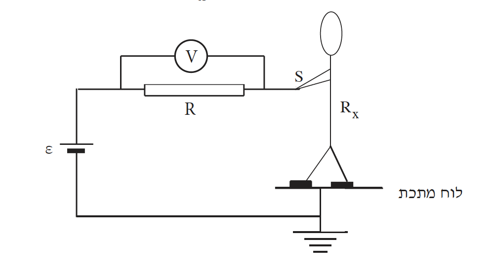

שאלה 3
חשמלאי צריך לנעול נעליים מיוחדות בזמן שהוא עובד. חשוב לדעת מהי ההתנגדות של אדם הנועל נעליים אלה, כדי להגן עליו מפני התחשמלות. התחשמלות של אדם מתרחשת כאשר דרך גופו עובר זרם גדול מ-0.005 A.
מפעל המייצר נעליים מיוחדות לחשמלאים הציע להשתמש במעגל החשמלי המתואר בתרשים שלפניכם, כדי למדוד את ההתנגדות Rx של אדם הנועל נעליים אלה.

לצורך המדידה אדם הנועל את הנעליים עומד על לוח מתכת, ואוחז בקצה S של תיל מוליך (ראו תרשים). המעגל כולל מקור מתח קבוע ε = 48 V שההתנגדות הפנימית שלו זניחה, נגד שהתנגדותו R = 106Ω, ומד-מתח שהתנגדותו גדולה מאוד ("אין-סופית"). מד-המתח מודד את המתח V בין קצות הנגד R.
האם במעגל שבתרשים עוצמת הזרם יכולה להיות גדולה מ-0.005 A? נמקו. (7 נקודות)
הוכיחו שאפשר לבטא את התנגדות החשמלאי כולל נעליו, Rx, באמצעות הביטוי:
Rx = R · ε - VV
כאשר V הוא המתח שמודד מד־המתח.
בבדיקה שנערכה במפעל נמצא כי V = 9.6 V. חשבו את ההתנגדות Rx. (12 נקודות)
חשמלאי צריך לתקן תקלה במכשיר המופעל על ידי מתח גבוה של 6 kV. התנגדות החשמלאי כולל הנעליים היא כמו זו שחישבתם בתת-סעיף ב(2).
בזמן עבודתו החשמלאי נוגע בידו בכבל הנמצא בפוטנציאל של + 6 kV יחסית לאדמה.
הסעיפים ג ו- ד מתייחסים למצב זה.
האם החשמלאי מתחשמל? הסבירו. (6 נקודות)
חשבו את מספר האלקטרונים שעוברים בשנייה אחת דרך גוף החשמלאי.
האם האלקטרונים עוברים מהאדמה לחשמלאי או מהחשמלאי לאדמה? נמקו. (8 1/3 נקודות)